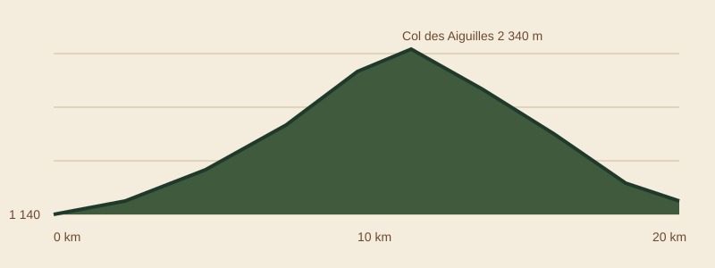

ALPIN-TRAIL
ALPIN-TRAIL20 kmdistance
1 100 mdénivelé positif
2 340 mpoint culminant
5 h 30temps limite
400places
La course
L'ALPIN-TRAIL se tient à Saint-Michel-des-Cimes (Hautes-Alpes), le samedi 12 juillet 2027. Le parcours démarre au cœur du village, grimpe par la forêt jusqu'à l'alpage de la Fontaine, puis franchit le Col des Aiguilles avant une longue descente technique vers l'arrivée.
Ouverte à tous les coureurs de 18 ans et plus, elle s'adresse aux traileurs confirmés comme aux débutants préparés, avec un esprit convivial plus que compétitif.

Profil du parcours

Ravitaillements : km 6 (eau), km 11 (au col : eau, fruits secs, boissons énergétiques), km 15 (solide et liquide), arrivée (repas chaud).
Sécurité : 60 bénévoles, équipes de secours en montagne, poste médical à l'arrivée, balisage par rubalise et fanions.